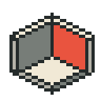
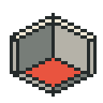
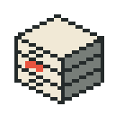
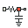
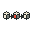

epsm
The platform: an open building cell with one active inner wall.
SVG · 32 px · 128 px · Dark SVGOriginal 32 × 32 scientific sprites. Five colours, one active red element, transparent backgrounds. The large preview is exactly 4× native size; the small preview is 1×. Dark variants add one cream pixel around the silhouette.

The platform: an open building cell with one active inner wall.
SVG · 32 px · 128 px · Dark SVG
Physical building geometry: the same open cell with its base active.
SVG · 32 px · 128 px · Dark SVGThree material and assumption panels; the middle panel is the effective selection.
SVG · 32 px · 128 px · Dark SVG
Three record drawers with one active record label; persisted catalogue storage.
SVG · 32 px · 128 px · Dark SVG
Thermal RC network: input, resistor, active junction and output; a capacitor branches from the junction to ground.
SVG · 32 px · 128 px · Dark SVGOne assessed material block inside a lifecycle loop; the active face identifies the assessed element.
SVG · 32 px · 128 px · Dark SVG
Three linked modelling stages; the central stage is active.
SVG · 32 px · 128 px · Dark SVGA study report with one highlighted result bar; experiment documentation and evidence.
SVG · 32 px · 128 px · Dark SVGAn open engineering handbook; the active right page represents shared development guidance.
SVG · 32 px · 128 px · Dark SVGA scientific workspace window containing the shared editable building cell.
SVG · 32 px · 128 px · Dark SVGAn inspection lens around the same open building cell; scene inspection and rendering.
SVG · 32 px · 128 px · Dark SVGA weather calendar and cloud with one active sample day; weather-series preparation for EPW.
SVG · 32 px · 128 px · Dark SVGVersion 1.0.0 · Editable grids · Manifest and hashes · MIT licence